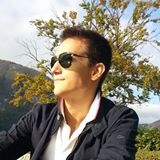

Sem Aljaž Klaneček, športnik, karateist iz Ljubljane. Po zaključeni Gimanziji Bežigrad, sedeaj obiskujem drugi letnik fakultete za računalništvo v Ljubljani.
Karate aktivno treniram že 12 let in sem aktualni članski in mladinski državni prvak v katah. Že dolgo sem član Slovenske mladinske karate reprezentance
in tekmujem tako na domačih turnirjih, kot tudi na turnirjih v tujini in na najvecjih tekmovanjih. Najbolj ponosen sem na 5. mesto iz mladinskega evropskega
prvenstva v Novem Sadu 2011. Vse od takrat si neizmerno želim doseči medaljo na največjih tekmovanjih in prepričan sem da mi bo uspelo. To bi bila druga
kataška medalja za Slovenijo. Novo priložnost bom morda imel že februarja na evropskem prvenstvu na Portugalskem. Tukaj pa se obračam na vas. Ker karate
še ni tako razvit kot nekateri drugi športi, je za tekmovalce zelo slabo poskrbljeno. Vsako tako tekmovanje, vse priprave, vse pripravljalne tekme, pa
tudi vsa oprema, predstavljajo velik strošek, ki obvisi delno na klubu in delno na mojih starših. Do sedaj je vsa ta leta še nekako šlo, ker pa se časi
zaostrujejo, sredstva v klubu in doma pa izrčpavajo, sem se obrnil tudi na vas. Prosim vas za spoznorstvo ali kakršna koli donacijska sredstva.